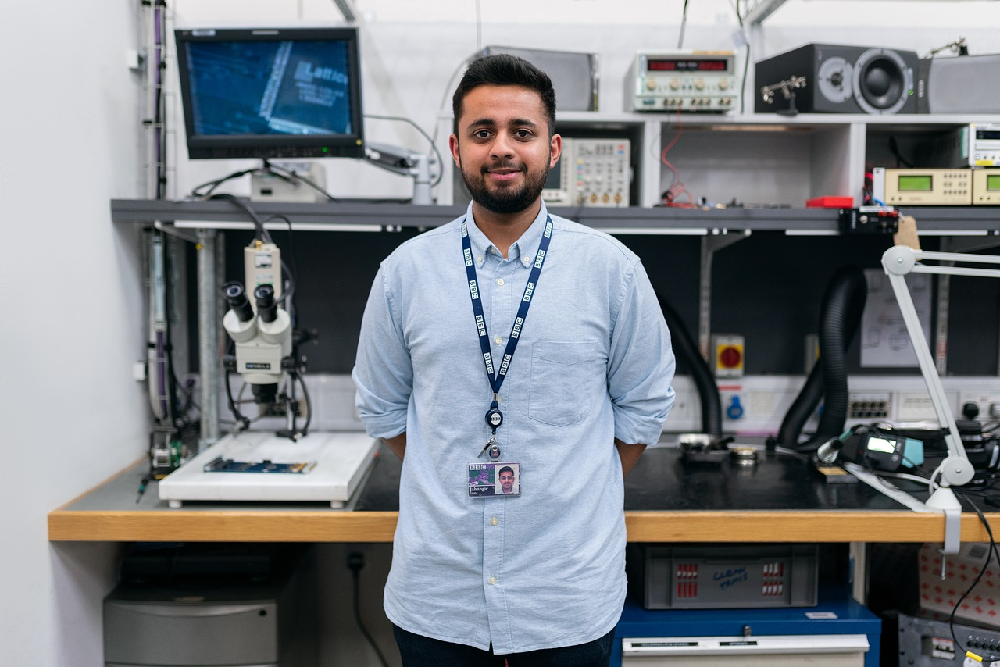

Since its inception in 2015, TechCon has grown from a small regional meetup into a globally recognized conference.
What began as a platform for tech enthusiasts to share ideas has evolved into an annual gathering where industry leaders,
startups, and researchers converge to discuss innovation, collaboration, and the future of technology.
this image depicts the history of TechCon
Mission
At TechCon, our mission is to inspire innovation, foster collaboration, and empower individuals and organizations to shape the future of technology.
We aim to create a global platform where ideas are exchanged, solutions are born, and leaders emerge to drive meaningful impact in society.
this image explains the mission TechCon hopes to accomplish
Past Speakers
Dr. Aisha Karim - AI Research Pioneer
Dr. Aisha Karim the AI Research Pioneer
Dr. Aisha Karim, Chief Scientist at FutureAI Labs, is a globally recognized expert in artificial intelligence and ethical machine learning.
She has led groundbreaking research on responsible AI frameworks and was instrumental in developing scalable AI solutions now
adopted by major healthcare organizations worldwide.
Michael Chen - Tech Entrepreneur & Innovator

Michael Chen, the Tech Entrepreneur & Innovator
Michael Chen, founder of CloudSphere Technologies, revolutionized cloud infrastructure with his company’s innovative low-latency solutions.
Under his leadership, CloudSphere scaled to serve millions of users, and his contributions have shaped how businesses worldwide
leverage cloud computing for growth and resilience.